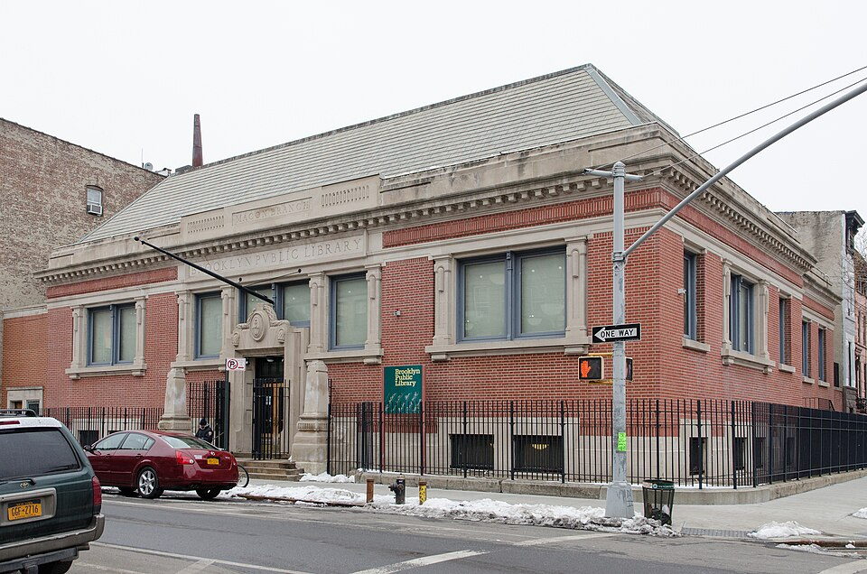

Macon LibraryA branch of the Brooklyn Public Library |
|||||||||||||||||
|
 |
The Macon Library is a branch of the BPL located in the Bed-Stuy neighborhood, at the intersection of Lewis Avenue and Macon Street. The branch opened in 1907, as the city's eleventh Carnagie Library. Macon Library houses the African American Heritage Center, which was added during the 2006-2008 renovations. Photograph and information sourced from Wikipedia. Hours of operation
|
||||||||||||||||